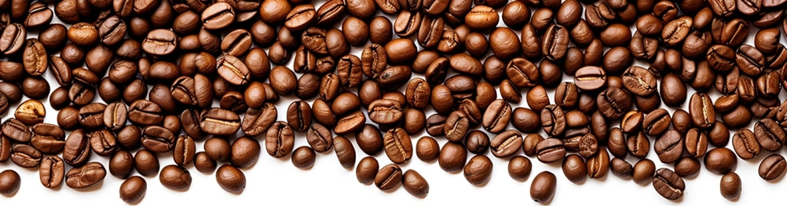
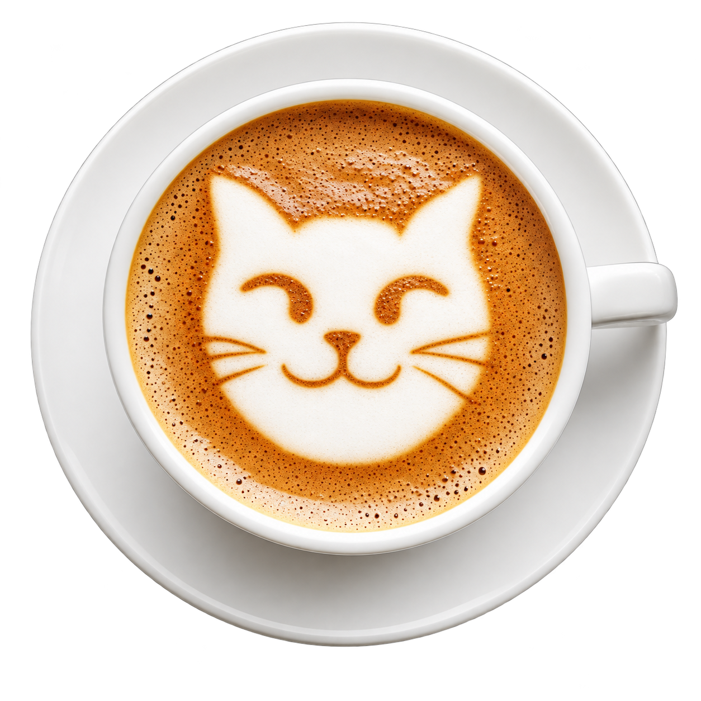

Whisker
& Brew
Coffee and Cats
Whisker & Brew is a Dallas-based café where great coffee meets even better company—cats.
Rooted in warmth and community, the brand blends cozy, modern design with a mission of ethical sourcing and animal rescue.
From locally roasted beans to partnerships with adoption shelters, every detail reflects a commitment to care, comfort, and connection.
